In-Vivo Cerebral Hemodynamics
In-Vivo Cerebral Hemodynamics
Overview Coherent Hemodynamics Spectroscopy Results
In , , and we conducted CHS measurements on the brain of healthy human subjects using the various NIRS techniques discussed in Part [prt:deepMeas]. Those techniques sought to preferentially access the brain using either long ρ in MD measurements or using DS .
In these studies we reported CHS oscillations at 0.1 Hz. The physiological source of the coherent hemodynamic fluctuations are ABP oscillations at a frequency of, induced by cyclic inflation (to a pressure of 200 mmHg) and deflation of two thigh cuffs wrapped around the subject’s thighs or paced breathing . To interpret these results we utilized the CHS phasor model (Figure [fig:CHSphasors]), by extracting from the NIRS data the Õ, D̃, and T̃, using the methods in Appendices [app:detCoh]&[app:phasors]. We also actracted the à from ABP measurements using finger plethysmography.
In and the measurements were done on human forehead at multiple ρs (10 mm–40 mm; Chapter [ch:shortLong]). In there was one location and in it was bilateral (two locations). Both of these studies utilized SD I while only utilized SD φ and SS I.1
Then, in we presented a first in vivo application of DS φ, measured with FD NIRS to demonstrate its enhanced sensitivity to cerebral hemodynamics (Chapters [ch:DSintro]&[ch:DSpoint]). These data were analyzed for all possible data-types in the DS probe (Figure [fig:DSset]) which are SD, SS, and DS either I or φ.
In general the conclusions from all three of these works was that longer ρs, DS data, and φ data show CHS measurements more indicative of what was expected in the brain. That being a stronger BF versus BV contribution and higher AR in the brain versus the superficial tissue. This was consistent with what we learned about the 𝒮 profiles and maps in Part [prt:deepMeas].
Multi-Distance Studies
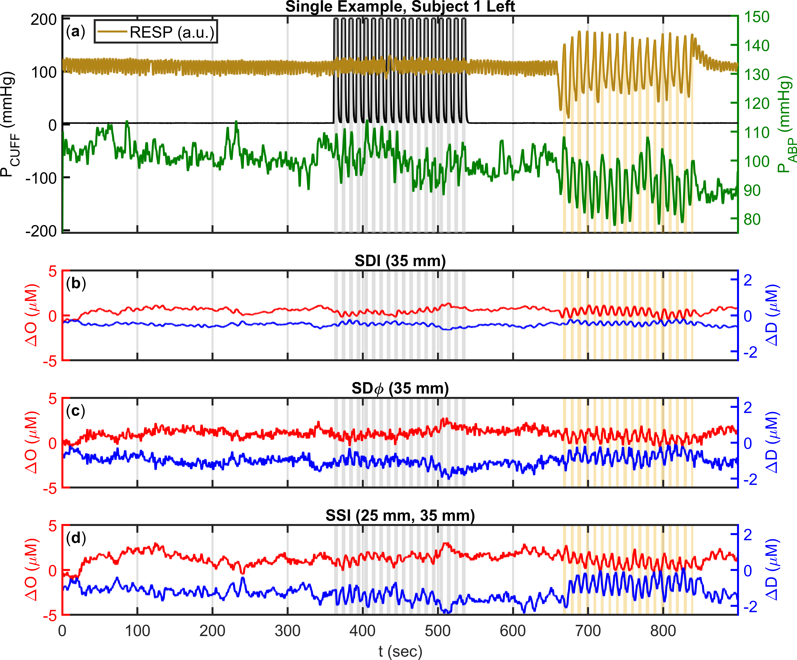
6
(35 mm; Figure [fig:MDprobe]). (c) ΔO
(Red; mean at 1 ) and ΔD (Blue, mean at −1 )
measured using SD phase (φ)
with Source 6 (35 mm; Figure [fig:MDprobe]). (d) ΔO
(Red; mean at 1.25 ) and ΔD (Blue; mean at −1.25 )
measured using Single-Slope (SS) I with
Sources 4&6 (25 mm, & 35 mm; Figure [fig:MDprobe]).Note 1: This figure can be found as Figure 2 in .
Note 2: All traces are low-pass filtered to 0.2 Hz, and shifted from zero baseline for visualization.
The methods used in the MD work are explained in Section [ch:shortLong:sec:MDmeth] and in the parent publications and . In general, the probe in Figure [fig:MDprobe] was used with the Imagent, and 0.1 Hz ABP oscillations were induced either by cuff or paced breathing. Example temporal traces from such a CHS protocol are shown in Figure 1.1. D̃/Õ and T̃/Ã data was extracted from the NIRS data using the methods in Appendices [app:dmuaMeas],[app:recChrom],[app:detCoh],&[app:phasors].
Only Considering Cuff Oscillations and Single-Distance Intensities
Summary of Single-Distance Multi-Distance Cuff Oscillation Results
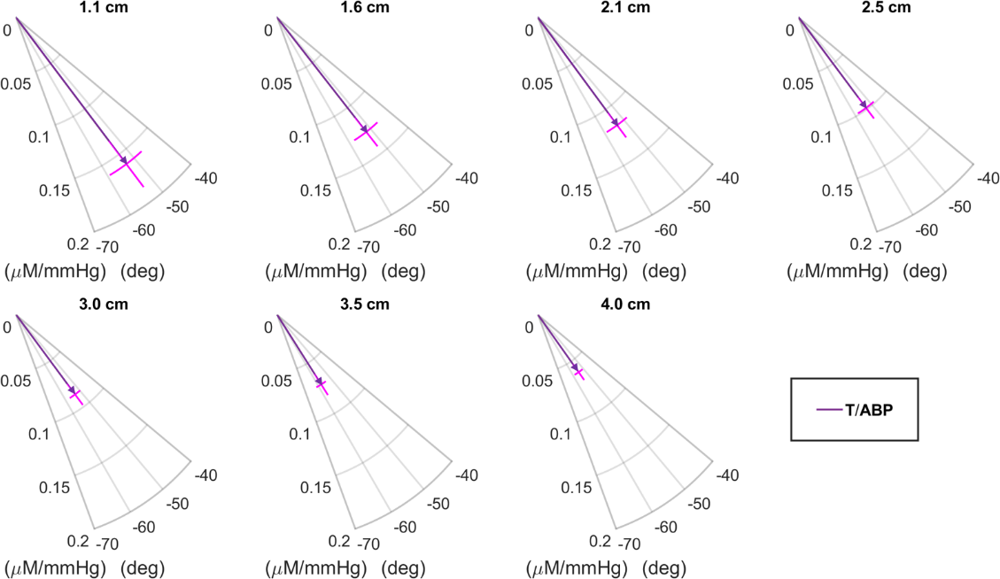
Note 1: This figure can be found as Figure 4(a) in .
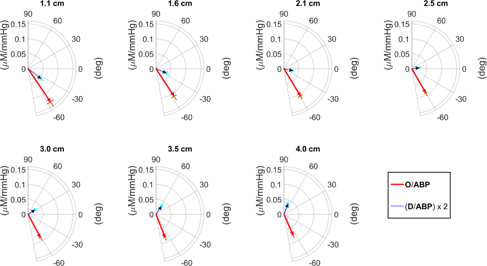
Note 1: This figure can be found as Figure 4(b) in .
An example trace of the data collected from cuff oscillations in can be found in Figure [fig:JBOfig3]. These temporal traces were further analyzed to extract D̃/Õ and T̃/Ã (Appendices [app:phasors]&[app:detCoh]).
Figure 1.2 reports T̃/Ã and Figure 1.3 reports D̃/Ã and Õ/Ã for the seven ρs in a representative case (Subject 4 in ). The error bars of the ratio of amplitude and phase lags are also reported in Figures 1.2&1.3. This representative case exhibits the typical finding that the phase of T̃ is relatively insensitive to ρ, and a phase angle between D̃ and Õ increases with ρ. This result is described in more detail in the next two sections.
Total-Hemoglobin versus Arterial Blood Pressure Phasor Ratio Vector
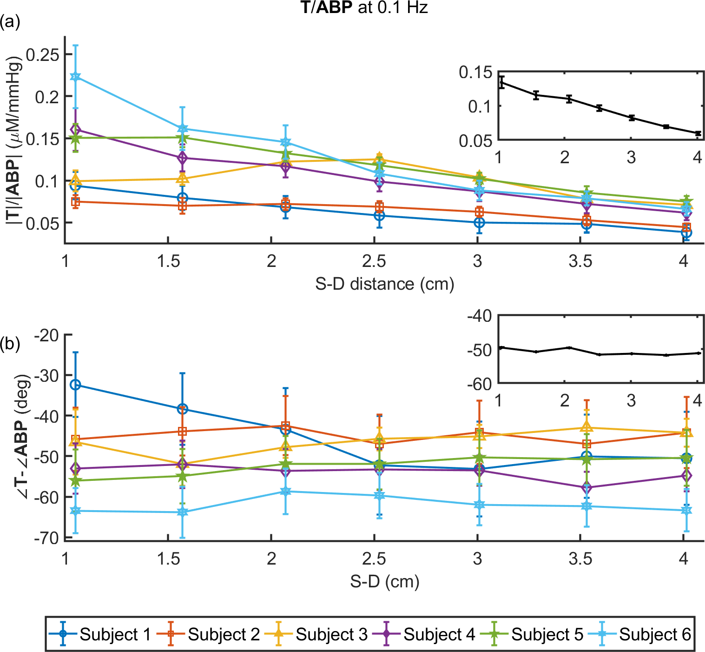
Note 1: This figure can be found as Figure 5 in .
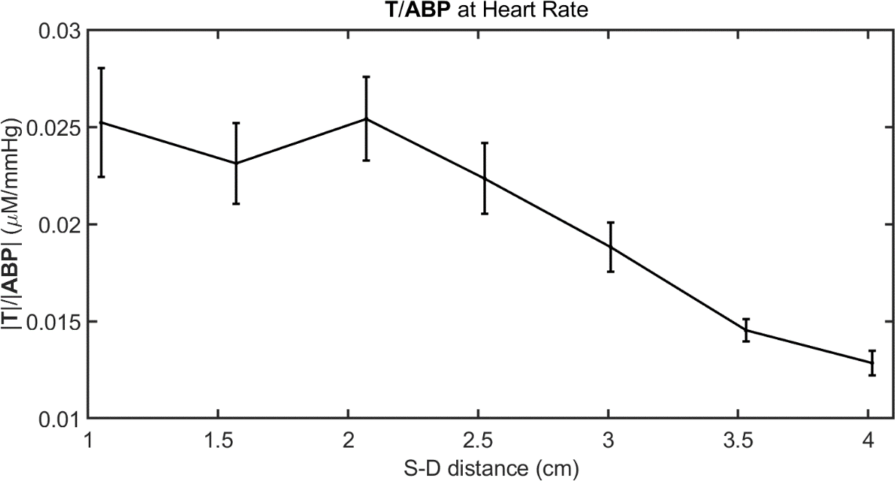
Note 1: This figure can be found as Figure 6 in .
T̃, which is reported here in relation to the Ã, represents a BV response to ABP oscillations. We have modeled the frequency dependence of T̃/à with the following expression : \[\widetilde{T}/\widetilde{A}=K^{(a)}+\frac{K^{(v)}}{1+i 2 \pi f_{\text{\text{CHS}}} \tau_{\text{\text{AR}}}} \label{equ:TAtrans}\] where \(K^{(a)}\) and \(K^{(v)}\) are effective arterial and venous compliance factors, respectively, \(f_{\text{\mathrm{CHS}}}\) is the frequency of the hemodynamics oscillations, and \(\tau_{\text{\mathrm{AR}}}\) is a time constant for cerebral AR. According to Equation [equ:TAtrans], the phase of T̃ relative to à results from the sum of two complex terms, a first one representing an arterial contribution with a zero phase, and a second one representing a venous contribution with a negative phase: \[\angle\widetilde{T}/\widetilde{A}=-\arctan\left(2 \pi f_{\text{\mathrm{CHS}}} \tau_{\text{\mathrm{AR}}}\right)\] According to this model, a more negative phase of T̃/à may result from a longer time constant \(\tau_{\text{\mathrm{AR}}}\) (id est a less effective AR) or a greater venous-to-arterial relative contribution to the measured hemodynamics.
Figure 1.4 shows the amplitude ratio (panel (a)) and the phase difference (panel (b)) for T̃/Ã for each subject in , with insets reporting the grand average over all subjects. The amplitude of T̃/Ã consistently decreases with ρ in all subjects (starting at a distance of 10 mm in Subjects 1,4,&6, at 15 mm in Subject 5, and at 25 mm in Subjects 2&3 all in ), indicating a greater BV oscillation in the superficial tissue layers (scalp, skull, et cetera) versus the deeper, intracranial cerebral tissue. This result reflects the mechanical constraint set by the skull, which limits the cerebral BV response to changes in ABP.
The phase of T̃/Ã does not show a significant dependence on ρ, except for Subject 1 in . In fact, a Watson-Williams test for comparison of the combined three measurements at 10 mm–20 mm distances with the combined three measurements at 30 mm–40 mm finds a significant decrease at the \(\alpha=0.05\) level only in Subject 1 in (\(p\text{-value}=0.017\)). A phase of T̃/Ã that is constant with ρ indicates that the timing of the BV response to ABP changes is the same at different tissue depths. According to the model of Equation [equ:TAtrans] there are two factors that affect the phase of T̃/Ã:
The relative contribution of arterial (zero phase) and venous (negative phase) vascular compartments, with less negative phase values associated with greater arterial-to-venous relative contributions.
The effectiveness of AR, with less negative phase values associated with a more effective AR (id est a smaller time constant \(\tau_{\text{\mathrm{AR}}}\)).
When both effects are present they may reinforce or compensate each other. The more negative phase (id est greater delay) of T̃/à at larger ρ observed in Subject 1 in is consistent with a smaller arterial-to-venous contribution in deeper tissue versus superficial tissue which dominates the other effect due to improved AR that is likely to be detected at larger ρ. Because the arterial term is frequency independent, we can verify the trend of the arterial term by considering T̃ and à oscillations at the heart rate frequency (where the arterial contribution term in Equation [equ:TAtrans] dominates). We observed a significant decrease of the amplitude of T̃/à versus ρ, not just in Subject 1 but in all subjects in . This result is shown in Figure 1.5, where the grand average of the amplitude of T̃/à at the heart rate is plotted as a function of ρ. The heart rate throughout the 11 min protocol was 1.41 ± 0.07 Hz, 1.29 ± 0.05 Hz, 1.4 ± .1 Hz, 1.34 ± 0.07 Hz, 0.98 ± 0.04 Hz, & 0.89 ± 0.03 Hz, for Subjects 1-6 in , respectively. In Subjects 2,3,4&6 in we observed a constant phase of T̃/Ã, suggesting that the reduced arterial-to-venous contributions may have been compensated by a more effective AR in deeper (cerebral) versus superficial (extracerebral) tissue.
Deoxy-Hemoglobin versus Oxy-Hemoglobin Phasor Ratio Vector
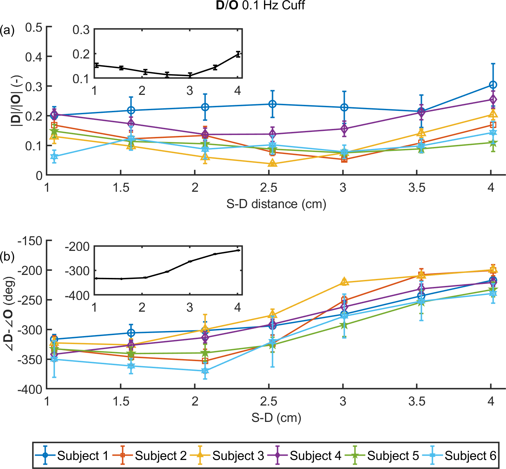
Note 1: This figure can be found as Figure 7 in .
Figure 1.6 shows the amplitude ratio (panel (a)) and the phase difference (panel (b)) for D̃/Õ for each subject, with insets reporting the grand average over all subjects. In most subjects, the amplitude of D̃/Õ as a function of ρ shows an initial decrease (up to a distance of 20 mm–35 mm, depending on the subject) followed by an increase up to the maximum distance of 40 mm.
The phase of D̃/Õ shows a consistent and significant increase with ρ in all subjects. Depending on whether one considers a positive or negative phase difference between D and O oscillations, this means that D oscillations lead by a greater amount or lag by a lesser amount, respectively, oscillations in O. We have previously argued that one should consider the phase of D̃/Õ to be negative, meaning that D oscillations lag O oscillations, and this is the reason for the negative phases reported in Figure 1.6(b).
Discussion of Single-Distance Multi-Distance Cuff Oscillations
In , we studied the amplitude and phase relationships of T̃/Ã, as well as D̃/Õ as a function of ρ (10 mm–40 mm) at one frequency (0.1 Hz) of cyclic inflation and deflation of pneumatic thigh cuffs. NIRS measurements at longer ρ feature a greater 𝒮 to deeper tissue (Figure [fig:MDsetSDsen]), so that the measurements reported here provide information on the transition from a weak 𝒮 to the brain (10 mm) to a stronger 𝒮 to the brain (40 mm). We assume here that our hemodynamic models are applicable to NIRS data collected at different ρs, by considering physiological parameters that depend on ρ. The dependence on d provides an indication of the different values of physiological parameters, exempli gratia the AR time constant, in superficial versus cerebral tissue.
It would be of practical use to extract information on the brain AR by using a MD source-detector arrangement and using only one frequency of the inducing oscillating mechanism. Our results for T̃/Ã 0.1 Hz (Figure 1.4) show that their amplitude ratio decreases monotonically with ρ (Figure 1.4(a)), whereas their phase difference is approximately constant (Figure 1.4(b)). The trend of the amplitude T̃/Ã as a function of ρ reflects the mechanical constraint set by the skull, which limits the cerebral BV response to changes in ABP. This effect is more relevant at larger values of ρ, where the optical channels are more sensitive to cerebral hemodynamic oscillations. About the phase trend of T̃/Ã, we have argued that two competing mechanisms occur:
A reduced arterial versus venous contribution at larger values of ρ (which causes a more negative phase angle of T̃/Ã).
A smaller value of \(\tau_{\text{\mathrm{AR}}}\) at increasing ρ (which causes a less negative phase angle of T̃/Ã).
The latter behavior reflects the increased sensitivity of optical measurement at larger ρ to the cerebral arterioles that regulate brain AR. More precisely, Figure 1.4(a)(b) are consistent with both arterial and venous contributions to T that decrease with ρ, but with the arterial contribution decreasing faster than the venous one, and an AR time constant \(\tau_{\text{\mathrm{AR}}}\) that decreases with ρ (a smaller \(\tau_{\text{\mathrm{AR}}}\) corresponds to a more effective AR). Because of these two competing mechanisms it is possible that in some subjects (exempli gratia in Subject 1 in ) one mechanism prevails on the other, yielding a ρ dependence in the relative phase of T̃/Ã. Therefore, because the modeled transfer function between ABP and T depends on two competing contributions that feature different frequency dependencies (the arterial one is frequency independent, at least in the frequency range of interest here), their discrimination may be achieved by collecting data at multiple frequencies, in the spirit of the CHS approach.
We have also shown how the measurements of D̃ and Õ, especially the increase in their phase angle with ρ, is a direct signature of improved AR according to our CHS mathematical model1 which has been used in Figure [fig:CHSphasors]. We have decomposed the measured phasors Õ and D̃ into their BV (\(\widetilde{O}_V\), \(\widetilde{D}_V\)) and BF (\(\widetilde{O}_F\), \(\widetilde{D}_F\)) components, by assuming a value of 75 % for the hemoglobin saturation of the volume oscillating compartment . A larger phase of D̃ (at larger ρ), impacts the amplitude of T̃ (as shown in the results) and impacts also the phase between the F̆ and Ã, which is an indicator of cerebral AR. Figure [fig:CHSphasors] also provides a visual interpretation of the result of Figure 1.6. In fact, given the weak sensitivity of the phase of T̃ and Õ on the ρ, one would expect a minimum value of the magnitude of D̃ when the phase angle of D̃/Õ is about 90° (or -270°), which is confirmed in Figure 1.6, especially in the insets that report the grand average over all subjects.
In summary, the results in showed an increase in the phase angle between Õ and D̃ at larger ρ. This was assigned to greater BF versus BV contributions and to a stronger BF AR in deeper tissue (brain cortex) with respect to superficial tissue (scalp, skull). The relatively constant phase lag of T̃/Ã at all ρ was assigned to competing effects from stronger AR and smaller arterial-to-venous contributions in deeper tissue with respect to superficial tissue. This work demonstrated the application of the CHS model to interpret hemodynamics measured with NIRS and to assess the different nature of shallow (extracerebral) versus deep (cerebral) tissue hemodynamics.
Considering Various Oscillations with Frequency-Domain Data-Types
In , we reported FD NIRS measurements on the forehead of healthy human subjects, during paced breathing and cuff oscillations at 0.1 Hz. This protocol is typical of CHS and very similar to that discussed for but with the addition of more repeated measurements, measurement locations (bilateral), paced breathing, φ data, and SS data. As before the probe in Figure [fig:MDprobe] was utilized to realize MD measurements. The rationale for this study is the sets of NIRS data, as discussed in Part [prt:deepMeas], which feature different levels of sensitivity to deeper versus superficial tissue may provide indications on cerebral versus extracerebral tissue hemodynamics, thus helping to address the issue of extracerebral tissue contamination in NIRS signals.
Summary of Frequency-Domain Multi-Distance Oscillation Results
An example trace of the data collected from cuff oscillations in can be found in Figure 1.1. These temporal traces were further analyzed to extract D̃/Õ for the various FD data-types of SD or SS with either I or φ.
Absolute Optical Properties
Table [tab:PHTtab1] reports the baseline absolute optical properties from the calibrated linear slopes method in Appendix [app:absOptPropMeas], at the 2 λs of 690 nm, & 830 nm, averaged over all days and locations for the five subjects in . From the μa at two λs, we have obtained absolute concentrations of O, D, and T, as well as S assuming a 70 % W using the methods in Appendix [app:recChrom]. The measured values of optical properties and hemoglobin parameters are consistent with previously reported values using a similar FD, MD approach .
Coherence Between Arterial Blood Pressure and One of Oxy-hemoglobin, Deoxy-hemoglobin, or Total-Hemoglobin
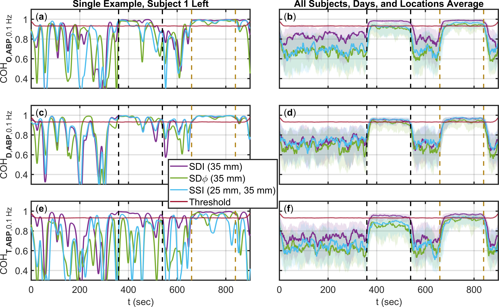
Note 1: This figure can be found as Figure 3 in .
The temporal traces of wavelet 𝔠 at a frequency of 0.1 Hz are reported in Figure 1.7 for 𝔠(Õ,Ã) (Figure 1.7(a)(b)), 𝔠(D̃,Ã) (Figure 1.7(c)(d)), and 𝔠(T̃,Ã) (Figure 1.7(e)(f)), for ΔO, ΔD, and ΔT obtained with SD I, SS I, and SD φ data. Figure 1.7(a)(c)(e) are for a single measurement session on a single subject (Subject 1 in ) and single location (left), whereas Figure 1.7(b)(d)(f) are the average over all subjects, all days, and both locations from . The time periods featuring cyclic cuff inflation and paced breathing at 0.1 Hz are indicated by black and mustard vertical dashed lines, respectively, and they feature induced hemodynamics at 0.1 Hz. During baseline, low-frequency spontaneous hemodynamic oscillations in the 0.1 Hz frequency region are present as a result of systemic physiological oscillations as well as local vasomotion . Figure 1.7 also shows the threshold for significant 𝔠 from Chapter [ch:signCoh]. Figure 1.7 shows that tissue hemodynamics at 0.1 Hz feature a much greater level of 𝔠 with ABP during cyclic cuff inflation and paced breathing than during baseline. For this reason, in the following we only consider coherent hemodynamics during cyclic cuff inflation and during paced breathing. Furthermore, the 𝔠 of SD I data is typically greater than the 𝔠 of SS I, and SD φ data. This latter result is certainly determined, at least in part, by the greater noise of SS I, and SD φ data with respect to SD I data, but it may also result from a greater 𝔠 between superficial hemodynamics (to which SD I data are strongly sensitive) and ABP, versus cerebral hemodynamics and ABP.
Deoxy-Hemoglobin and Oxy-Hemoglobin Phasor Ratio as a Function of Source-Detector Distance for Different Measurement Methods
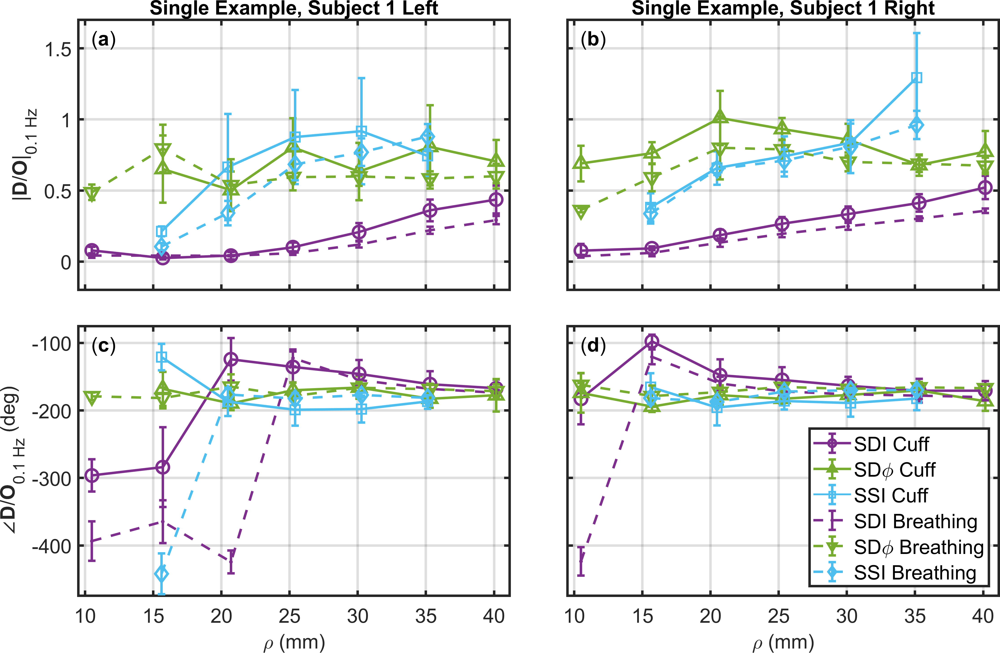
Note 1: This figure can be found as Figure 4 in .
Note 2: SS I measurements analyzed with two sources spaced by 10 mm, plotted such that ρ is the average of the source-detector distances of the two sources.
Note 3: Error bars represent the standard deviation of all analyzed pixels that show significant Coherence (𝔠) in the wavelet transfer function scalogram (Appendix [app:phasors]).
Optical measurements exhibit increasing 𝒮 to deeper tissue as the ρ (id est, the distance between the illumination and collection points) increases (Figure [fig:MDsetSDsen]). This is true for both SD and SS methods (Figures [fig:MDsetSDsen]&[fig:MDsetSSsen]). It is also important to consider that I and φ data feature different 𝒮 to deeper versus superficial tissue. Figure 1.8 reports the SD I and SD φ measurements at ρ from 11 mm–40 mm (Figure [fig:MDprobe]), as well as SS I obtained from data at two ρ separated by approximately 10 mm (in this case, the data points are assigned to the mean ρ in Figure 1.8) for the amplitude and phase D̃/Õ. Data for both protocols, cyclic cuff inflation, and paced breathing are shown in Figure 1.8 for one representative subject (Subject 1 in ) and both sides of the forehead (Figure 1.8(a)(c): left; Figure 1.8(b)(d): right). For both protocols, there is a trend of SD I data versus ρ:
The amplitude of D̃/Õ increases from a value <0.1 at short ρ, to a value that approaches 0.5 at long ρ.
The phase of D̃/Õ evolves from an in-phase behavior (-360°) at short ρ to an opposition-of-phase behavior (-180°) at long ρ.
The results obtained at short ρ are consistent with superficial tissue hemodynamics that mostly represent arterial BV oscillations (for which D̃ and Õ would be in phase, and their amplitude ratio would reflect the oxygen saturation of the oscillating arterial compartment as in Figure [fig:CHSphasors] ). The results obtained at long ρ are consistent with deeper tissue hemodynamics that are characterized mostly by BF oscillations (for which D̃ and Õ would be in opposition of phase, and would have the same amplitude as in Figure [fig:CHSphasors] ). In fact, SD φ and SS I data, which are more specifically sensitive to deeper tissue, yield relatively large values (>0.5) for the amplitude of D̃/Õ and opposition-of-phase (-180°) conditions for the phase of D̃/Õ. This point is reinforced by the significantly greater amplitude of D̃/Õ measured with SD φ (35 mm) versus SD I (35 mm) (\(p\text{-value}<0.0001\)), and with SS I (30 mm, & 40 mm) versus SD I (35 mm) (\(p\text{-value}<0.0001\)). It is worth noting that SD I data (and, to a lesser extent, SD φ data) still show an increasing trend for the amplitude ratio versus ρ, whereas the phase of D̃/Õ is relatively insensitive to the ρ used for SD I and SD φ measurements unless very short ρ are considered.
It is apparent from Figure 1.8 that SS I and SD φ measurements at ρ of approximately 20 mm yield values of D̃/Õ that are only obtained at longer ρ (>35 mm) with SD I. Particularly for the amplitude of D̃/Õ, it appears that the values obtained with SS I and SD φ at 25 mm represent asymptotic values for SD I (id est, values that are attained with SD I in the limit of large ρ) that are not reached even at the largest ρ considered (40 mm). These results reported for a single subject in Figure 1.8, are confirmed by the average over all subjects, shown in Figure [fig:PhotonicsFig5](a)(c) and backed up by phasor simulations Figure [fig:PhotonicsFig5](b)(d).
Deoxy-Hemoglobin and Oxy-Hemoglobin Phasor Ratio Measured at Long Source-Detector Distances with Different Methods
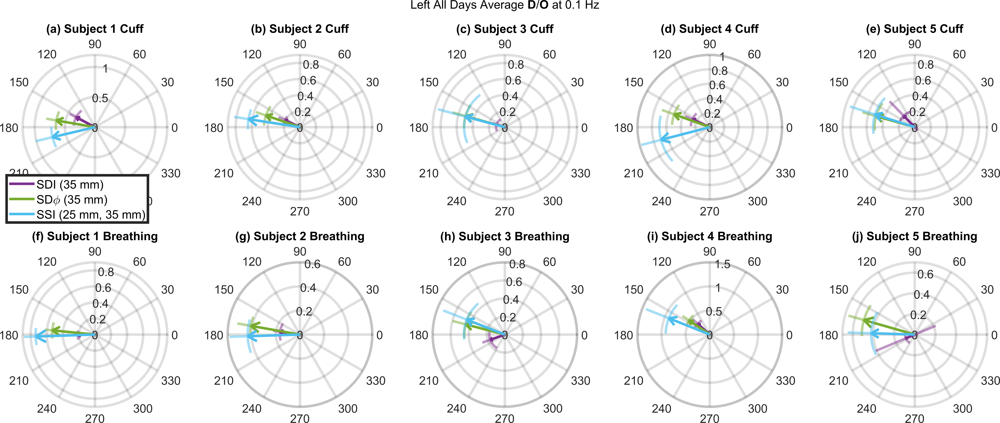
Note 1: This figure can be found as Figure 6 in .
Note 2: Error bars are shown as arcs for the phase and line segments extending from the arrow point for the amplitude. These show standard deviation of all analyzed pixels over all days that show significant coherence in the wavelet transfer function scalogram (Appendix [app:phasors]).
Figure1.9 shows D̃/Õ for each individual subject (left side, average over all measurement days) and for both protocols (cuff and paced breathing) from measured with SD I (35 mm), SD φ φ (35 mm), and SS I (25 mm, & 35 mm). These long ρ measurements (approximately 25 mm–35 mm) are typically used in cerebral NIRS as it is well established that they achieve a suitable penetration depth to probe the brain. We recall that the amplitude and the phase of D̃/Õ (id est, the length and direction of the arrows in Figure1.9) represent the amplitude ratio and the phase difference, respectively, of the D̃ and Õ phasors.
A first result of Figure1.9 is that the amplitude of D̃/Õ is consistently and significantly greater when measured with SS I and SD φ (values of about 0.4 or more) than with SD I (values of about 0.2 or less) (\(p\text{-value}<0.0001\)). This result suggests that brain tissue (which is most effectively probed with SS I and SD φ versus SD I) features amplitudes of ΔD oscillations that approach the amplitude of ΔO oscillations.
A second result of Figure1.9 is that the phase of D̃/Õ is significantly closer to -180° when measured with SS I or SD φ than with SD I (\(p\text{-value}<0.0001\) for both). By recalling that pure BF velocity oscillations (or oscillations in metabolic rate of oxygen) result in Õ and D̃ that are in opposition of phase, this result suggests that brain tissue features BF oscillations that dominate over BV oscillations.
Discussion of Frequency-Domain Multi-Distance Oscillations
The dependence of measured hemodynamics in on ρ, the results obtained with the two protocols (cyclic cuff occlusion, paced breathing) are similar (Figures [fig:PhotonicsFig5]&1.8). A close inspection of the results obtained at large ρ separation (Figure 1.9) shows some differences between the SD I data collected in the two protocols. Typically, the phase of D̃/Õ is more negative in the cuff protocol than in the paced breathing protocol. If this result is assigned to the brain, a possible explanation is the better cerebral AR during paced breathing, if the subject hyperventilates and therefore creates hypocapnia . However, this difference between protocols is not visible in the SS I data, for which the phase of D̃/Õ vectors are closer and do not show a consistent phase difference between protocols, and even less so in the SD φ data, for which the phase of D̃/Õ vectors is essentially the same for the two protocols. Therefore, we assign the differences between protocols observed in the SD I data to extracerebral tissue contributions, as a result of variable scalp hemodynamic changes in the 2 protocols. While the relatively small number of subjects (5) in does not allow for a statistically significant comparison of the results obtained with the two protocols, we contend that the subjective nature of the paced breathing protocol will introduce a level of variability that is intrinsically linked to the specific subject population. The value of the results reported in this work, which fall short of demonstrating the equivalence or the difference between the two protocols for CHS, lies in confirming the feasibility of both protocols for CHS and in demonstrating a qualitative similarity of the coherent hemodynamics elicited by the 2 protocols.
We did not observe consistent differences between the right and left sides of the forehead, and across measurement days in , at least not within the experimental uncertainties of measured amplitude and phase of Õ and D̃. For this reason, we opted to resort to averages over all subjects, days, and locations in Figure [fig:PhotonicsFig5](a)(c) and over all days in Figure 1.9. However, the temporal and spatial variability of oscillatory cerebral hemodynamics in response to controlled systemic perturbations, as studied in CHS, is worth of careful consideration as it may provide valuable functional and physiological information . The spatial dependence of coherent cerebral hemodynamics is an important future direction for CHS imaging.
A key finding of this study is that measurements of the D̃/Õ vector that are more sensitive to brain tissue indicate amplitude of D̃ and Õ that are comparable in amplitude and that approach opposition of phase. This result is consistent with the previous sections and based on SD I measurements during a cyclic thigh cuff occlusion protocol. The CHS model shows that D̃ and Õ are in phase in the case of pure BV oscillations (because both D and O change in the same direction as a result of BV changes), whereas they are in opposition of phase in the case of pure BF oscillations (because in the absence of BV changes any increase in O must be associated with a decrease in D and vice versa) . This relationship is explained in Figure [fig:CHSphasors] and Chapter [ch:CHSintro]. Nevertheless, it is well established that cerebral BV changes during brain activation, with increases of the order of 30 % as measured with fMRI . Such BV changes appear to be inconsistent with the in-compressible nature of brain tissue and its enclosure within the in-extensible skull. A possible resolution to this apparent paradox has been proposed by hypothesizing water exchange between capillaries and brain tissue to maintain a constant total tissue volume while expanding the capillary bed . The optical measurements of hemoglobin concentration changes obtained with SD φ and SS I, which are more specific to the brain, may help elucidate the actual cerebral BV changes associated with the brain activation, hypercapnia, et cetera.
In summary, in we found that, on average, the D̃/Õ obtained with SD I at 11 mm–40 mm changes from to , respectively. SD φ and the SS I featured a weaker dependence on ρ separation, and yielded D̃/Õ of about at ρ greater than 20 mm. The key findings from these results were:
SD φ and SS I are sensitive to deeper tissue compared to SD I.
Deeper tissue hemodynamic oscillations, which more closely represent the brain, feature D̃ and Õ that are consistent with a greater relative BF to BV contributions in brain tissue compared to extracerebral, superficial tissue.
These conclusions further reinforce the ones drawn in and expands them to various FD data-types.
Dual-Slope Study
In the work presented in previous sections, namely , and , we reported the hemodynamics measured at a range of ρ (11 mm–40 mm) using SD I, SD φ, and SS I. In , we reported human brain measurements conducted with FD NIRS during a typical CHS protocol, in which we compare all 6 methods of data analysis available in a DS probe (Figure [fig:DSset]) in the point measurement mode (Chapter [ch:DSpoint]). The experimental schematic can be found in Figure [fig:JBPfig1]. Specifically, the 6 methods considered are: SD, SS, and (for the first time in ) DS for I and φ. The DS probe used for these experiments is shown in Figure [fig:DSset] which contained ρs of 25 mm, & 35 mm. Example traces from this first DS CHS study are shown in Figure [fig:JBPfig2].
Summary of First Frequency-Domain Dual-Slope Oscillation Results
Phase and Amplitude Relationships of Total-Hemoglobin and Arterial Blood Pressure During Systemic Oscillations for Different Measurement Methods
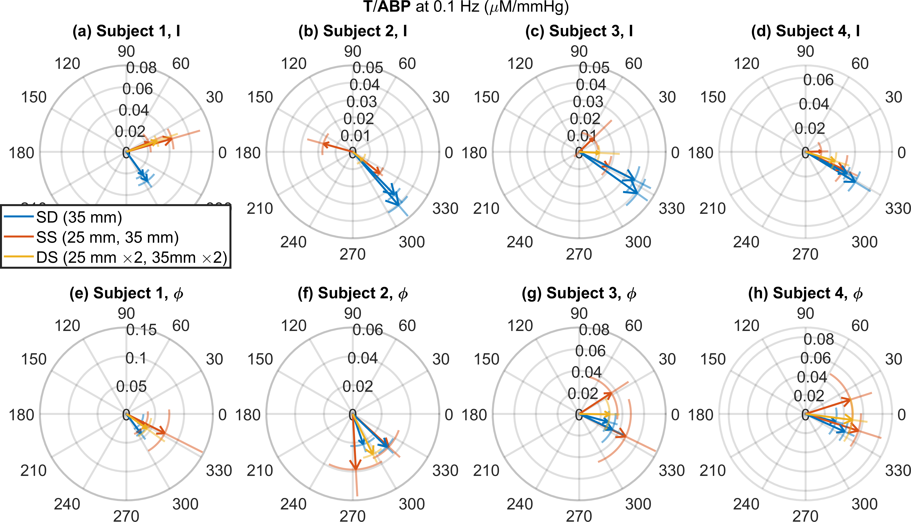
Note 1: This figure can be found as Figure 5 in .
Figure 1.10 shows the phase and amplitude of T̃/Ã at 0.1 Hz during the cyclic inflation and deflation of the thigh cuffs for all 4 subjects and all measurement methods in . Notice that SD I has a consistent T̃/Ã relationship across all 4 subjects with a mean phase difference of 40 ± 4 and mean amplitude ratio of 0.037 ± 0.002 mmHg−1 (5 % error). This is within the range of values for T̃/Ã at 0.1 Hz reported . However, the other analysis methods (SD φ, SS, and DS) do not show this consistent relationship and feature a large variance in some cases. For example, DS φ shows a mean phase difference and amplitude ratio of 0.018 ± 0.005 mmHg−1 and 10 ± 10 (28 % error), respectively. Generally, most other analysis methods’ vectors are in quadrant IV (same as SD I), but SD I is the only method that shows such a consistent relationship for T̃/Ã.2
Phase and Amplitude Relationships of Deoxy-Hemoglobin and Oxy-Hemoglobin During Systemic Arterial Blood Pressure Oscillations for Different Measurement Methods
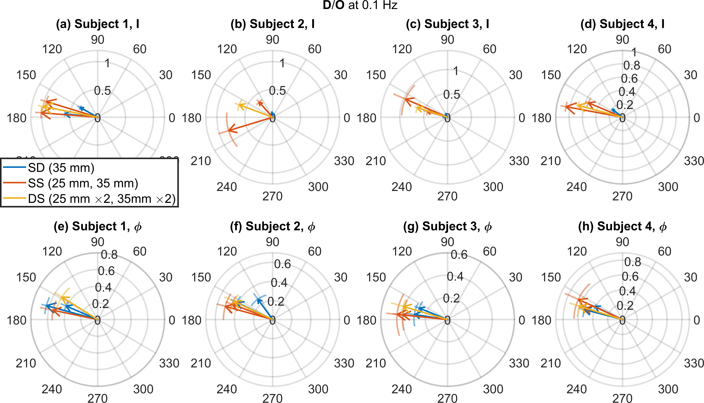
Note 1: This figure can be found as Figure 6 in .
Figure 1.11 shows the phase and amplitude of D̃/Õ at 0.1 Hz during the cuff oscillation period for all four subjects and all measurement methods in . Notice that the amplitude of D̃/Õ for SD I is smaller than for all other methods in all subjects, and that it shows no consistent value across subjects (ranging from 0.6 in Subject 1 to 0.07 in Subject 2 in ). Similarly, the phase of D̃/Õ for SD I also does not show a consistent value (ranging from -187° in Subject 3 to -268° in Subject 2 within ). In some cases (Subject 2 in ) the SS measurements show different relative phase values than DS, while DS, particularly, DS φ shows a consistent phase and amplitude of D̃/Õ across all subjects with a mean phase of −196 ± 2 and a mean amplitude of 0.75 ± 0.08 (11 % error). This compared to SD I’s inconsistent phase difference and amplitude ratio with means of −220 ± 10 and 0.20 ± 0.06 (30 % error), respectively.2 We were able to roughly recreate the measured vector relationships using phasor simulations in Figure [fig:JBPfig3].
Discussion Frequency-Domain Dual-Slope Oscillations
Examining Figure 1.11, and comparing φ results to I, the results for D̃ and Õ measured with φ show a closer opposition of phase (id est a phase closer to 180°) and a higher amplitude ratio (id est a ratio closer to 1) for D̃/Õ suggesting a stronger contribution from BF oscillations in the brain than in the scalp (Figure [fig:CHSphasors]). This result is also consistent with previous results in previous sections which examined MD data collected ρ in the range 11 mm–40 mm , and also pointed to the deeper 𝒮 of φ compared to I.
The conclusions about the advantages of DS and φ in Part [prt:deepMeas] are supported by comparing the simulations in Figure [fig:JBPfig3](g) to our experimental results for Subject 2 from in Figure 1.11(b), and by other work showing the possibility of heterogenous scalp hemodynamics . Examining our experimental results for D̃/Õ (Figure 1.11), we observe robust and consistent findings from DS data across subjects. This suggests that DS is the most robust measurement method, among those presented here, for non-invasive sensing of the human brain. This is likely due to the minimal 𝒮 to the superficial layer and insensitivity to drifts (Chapter [ch:DSintro]). Therefore, we conclude that DS coupled with φ (DS φ) features the deepest maximal 𝒮, combined with the least superficial 𝒮, and is the most robust method among those considered here.
A Greater Amplitude Ratio of Deoxy-Hemoglobin versus Oxy-Hemoglobin in the Brain Suggests a Smaller Blood Volume Change
Our experimental results for D̃/Õ (Figure 1.11) show a BF dominated oscillation in deeper layers when examined with the eyes of CHS (Figure [fig:CHSphasors]) . The closer the phase difference of D̃/Õ gets to -180° and its amplitude ratio to 1, the smaller the T̃ amplitude. T is considered a surrogate for BV. Thus, our results suggest less of a BV oscillation in the brain compared to the superficial layer, and more of a BF oscillation in the brain. The effect of this is seen in our T̃/Ã results in Figure 1.10, where the most superficial methods (SD I) shows the most consistent relationship for T̃/Ã. We presented model in Equation [equ:TAtrans] based on these consistent T̃/Ã results measured with SD I . However, the results presented here do not show the same consistent T̃/Ã for deeper tissue, suggesting that the previous data and model in Equation [equ:TAtrans] may have been mostly representative of scalp hemodynamics.
It might be noted that the amplitude of T̃/Ã presented here is greater for all methods other than SD I. This result may be impacted by the coherence analysis (Chapter [ch:signCoh] and Appendix [app:detCoh]), which preferentially selects higher amplitude T̃ periods (due to their higher 𝔠). However, when we examine the relationship of D̃/Õ coupled with the less consistent results for T̃/Ã, we can conclude that, in our results, the analysis methods sensitive to deeper tissue show either a smaller or less consistent BV oscillation.
This premise that the brain shows a small BV oscillation has been discussed in other works. Despite fMRI having consistently measured BV changes , the models involved require complicating fitting procedures and are not a direct measure of BV . This, combined with the fact that the skull contains an in-compressible fluid, has led to the suggestion that BV changes are in fact a redistribution of water from tissue to the vascular space . NIRS methods, unlike fMRI, measure the T in units of effective tissue concentration. If there were a redistribution of water (leaving the amount of T the same) within the 𝒮 volume of NIRS, little or no BV change would be measured with NIRS. Furthermore, work with fMRI has observed that changes resulting from brain activation are primarily caused by BF changes rather than by BV changes , in agreement with the results reported in .
There has been evidence, from methods that preferentially measure the brain, in support of relatively small changes in T. fNIRS studies have shown this result when analyzing the optical signals with ICA or a linear model , using a normalized time gating technique or ⟨t⟩ in TD. Additionally, the normalized time gating technique also showed little change in T during a systemic change . Our results of a BF dominated hemodynamic oscillations in the brain may point to a smaller BV oscillation in the brain versus the scalp, a possibility that has been discussed and presented previously (primarily concerning the in-compressibility of fluid and rigidity of the skull). These are supported by what was reported using MD methods in the previous sections, , and .
In summary, the in vivo results in indicate a qualitative difference of φ data especially DS φ and I data especially SD I, which we assign to stronger contributions from scalp hemodynamics to SD I and from cortical hemodynamics to DS φ. Our findings suggest that scalp hemodynamic oscillations may be dominated by BV dynamics, whereas cortical hemodynamics may be dominated by BF dynamics. These conclusions are again consistent with the physiological conclusions from and .